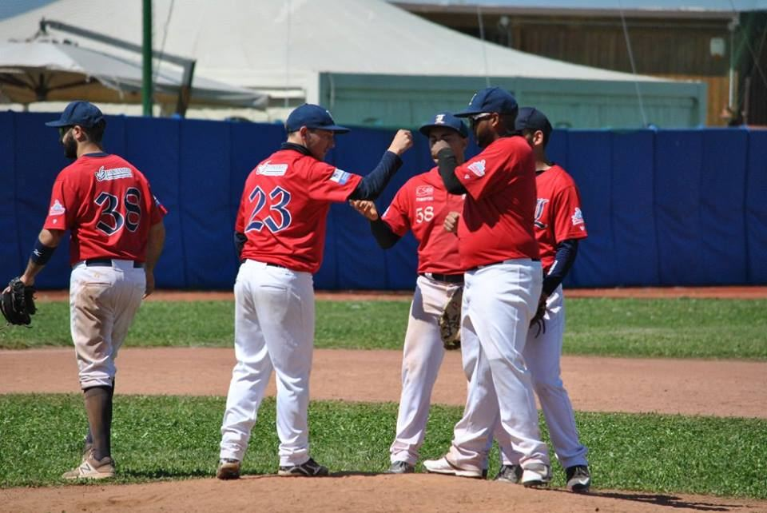

Una grandissima dimostrazione di carattere e voglia di riscatto quella che i Lancieri della prima squadra hanno messo in campo domenica all’esordio stagionale sul campo livornese.
I lastrigiani tornano da questa impegnativa trasferta a bottino pieno, gara 1 vinta di rimonta 5-6 e gara 2 archiviata senza troppi sussulti per 1-5.
I due precedenti tra precampionato e Coppa Italia vedevano la squadra del Livorno favorita ma i Lancers in queste settimane hanno lavorato duramente per ritrovare la giusta concentrazione e tranquillità, un ottimo lavoro di squadra che ha portato due ottimi risultati grazie anche allo staff tecnico formato da Gentilini, Ciappi e il grande aiuto di Rosellini/Barbieri.
La partita del mattina è la più difficile per i bianco/blu che sono subito costretti a inseguire la squadra labronica capace di segnare due punti al primo e uno al secondo inning. Sul monte il partente Vannini trova le giuste misure merito anche di una difesa più attenta, in fase offensiva dopo una fase di studio i Lancers colpiscono duramente il giovane e talentuoso lanciatorelivornese che sarà costretto a scendere dopo 3.1 riprese.
Il quarto attacco di fatto è la “freccia del sorpasso”, arrivano quattro punti con le valide di Diaz, Degl’Innocenti, Rudaj e Becattini.
Il Livorno pareggia al sesto ma la risposta dei Lancers è immediata con un punto al settimo, singolo di Baratella che spinge Bosi, e un punto all’ottavo.
Vannini chiude anche l’ottava ripresa degli avversari con un solo punto subito che fissa il risultato sul 5-6, ci pensa un cinico Pistol a chiudere definitivamente la pratica al nono eliminando consecutivamente secondo, terzo e quarto in battuta.
In gara 2 i Lancieri amministrano il risultato sin dall’inizio, il Livorno appare subito un avversario diverso e non nella migliore giornata.
Tutti e cinque i punti segnati dai lastrigiani arrivano tra primo e secondo inning, merito delle valide di Parrini, Nerbini, Glielmi nella prima ripresa e Baratella, Castillo e Geri in quella successiva.
I Lancieri continuano a colpire ma non arrivano ulteriori punti, buoni contatti ma poco fortunati.
Apata, designato partente dell’incontro, è costretto ad uscire per un piccolo infortunio, fortunatamente già risolto, dopo 1.1 riprese, lo rileva Bosi che completerà l’incontro con un solo punto concesso al quarto.
La giornata di conclude con 19 valide colpite dai Lancers, solamente 12 subite.
Una prestazione magistrale da parte di tutto il roster che fa ben sperare per il proseguo della stagione.
Prossimo impegno domenica 30 Aprile sul campo di Porto di Mezzo contro lo Junior Parma, reduce anch’esso da una doppietta.
Vi aspettiamo.